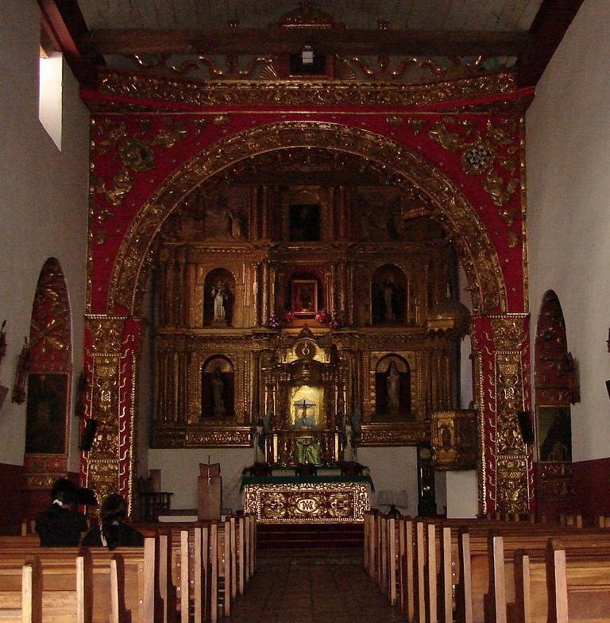
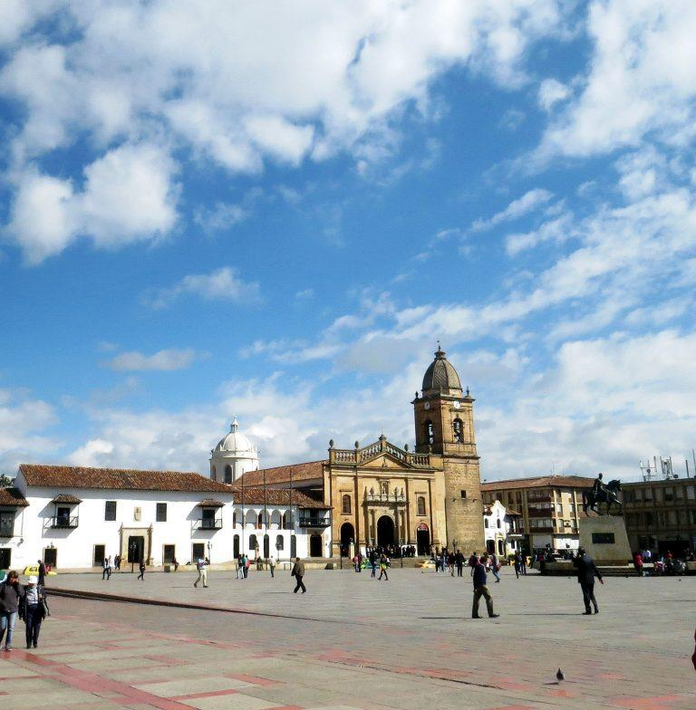
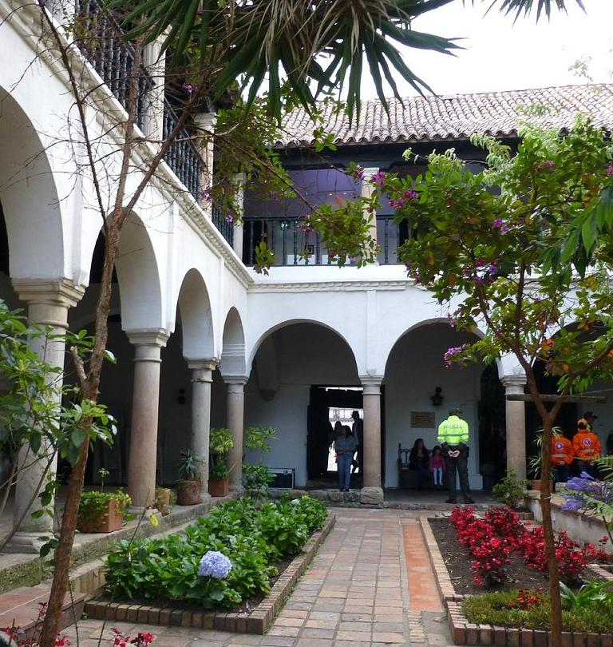
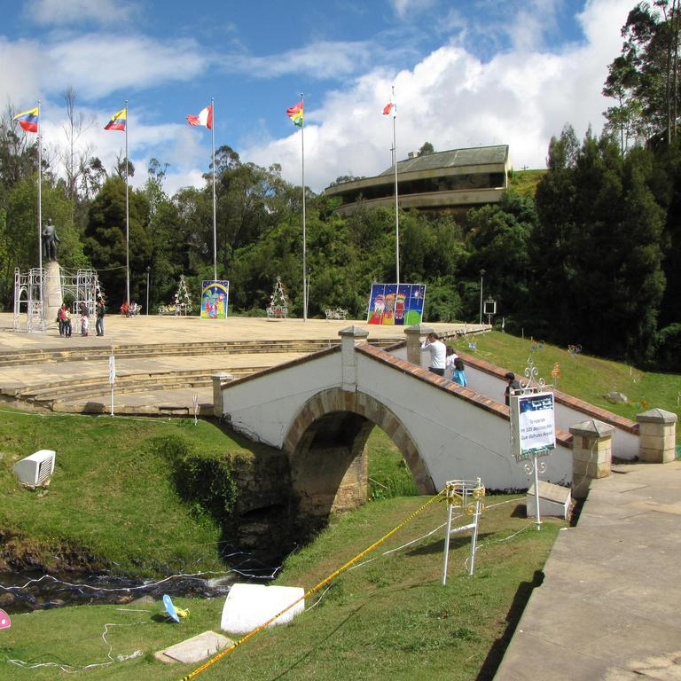
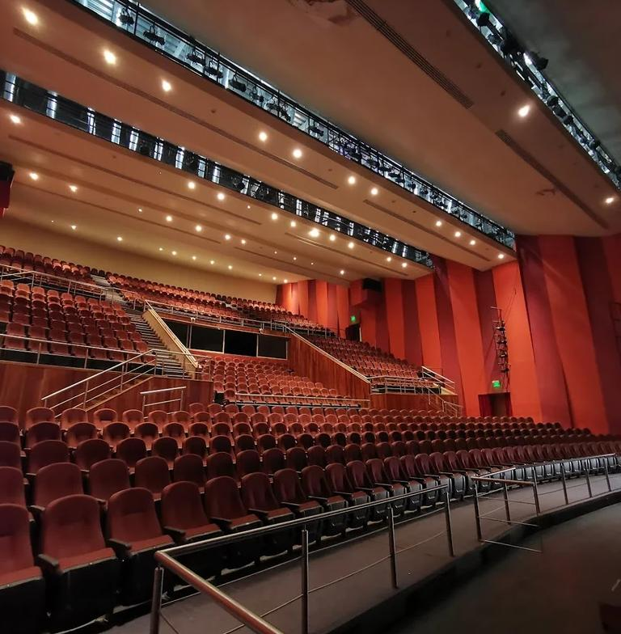
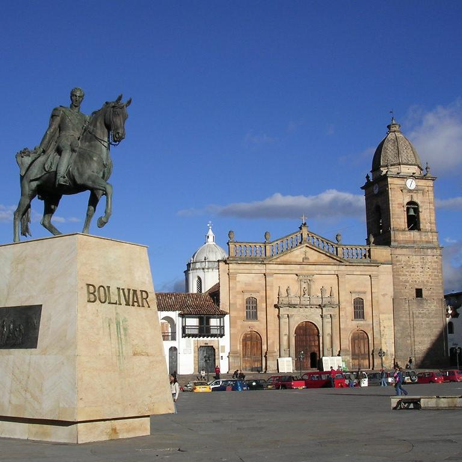
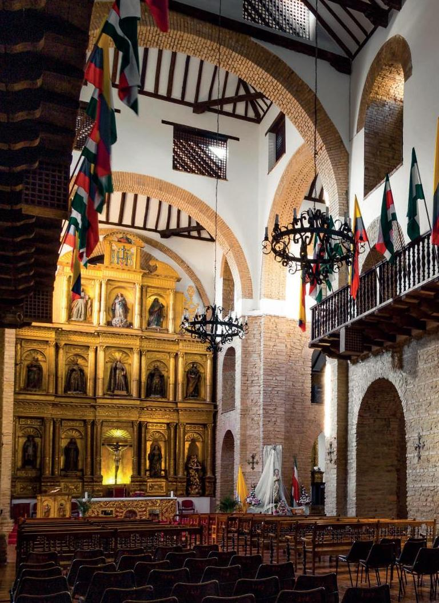
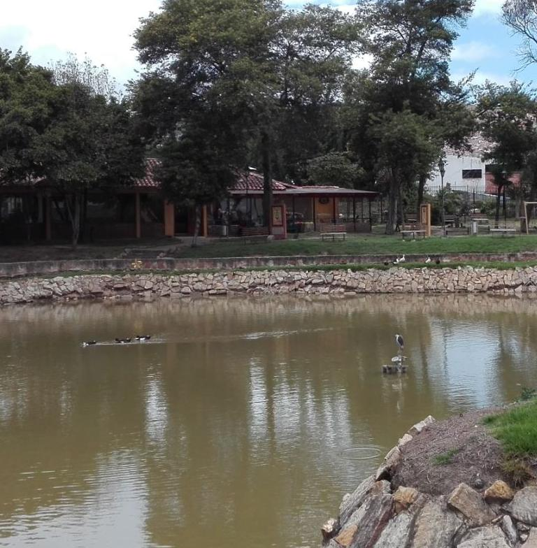

Tunja es una ciudad ubicada en el departamento de Boyacá en
Colombia. La ciudad fue fundada en 1539 por el conquistador español
Gonzalo Suárez Rendón y se convirtió en la capital de la provincia de
Tunja en el Virreinato de Nueva Granada. Durante la época colonial, la
ciudad se destacó como centro de producción agrícola y ganadera, y fue
un importante centro de comercio en la región.
En el siglo XIX, Tunja se convirtió en un importante centro cultural y
educativo, con la creación de la Universidad de Boyacá en 1827 y la
Escuela Normal de Varones en 1851. La ciudad también desempeñó un
papel importante en la lucha por la independencia de Colombia, y fue
el escenario de varias batallas importantes durante la Guerra de
Independencia.
En el siglo XX, Tunja se convirtió en un importante centro industrial
y de servicios en la región, y hoy en día es conocida por su
patrimonio cultural y arquitectónico, incluyendo su catedral de estilo
colonial, la plaza de Bolívar y el museo del Oro de Boyacá.
Tunja ha conservado gran parte de su patrimonio histórico y cultural,
y ha sido declarada Patrimonio Cultural de la Nación en Colombia. La
ciudad es un importante destino turístico en el país y atrae a miles
de visitantes cada año por su rica historia y tradición cultural.
Dar un vistazo a este lugar es como darnos un viaje en el tiempo a todos
los acontecimientos por los cuales ha pasado esta capital. Los sitios
los cuales puedes visitar para disfrutar de esta experiencia son: Tunja
es uno de los lugares más históricos y ricos culturalmente en Colombia.!

El templo de santo domingo es una joya arquitectonica coloquial. La
cual cuenta como sus hermosas y artísticas capillas, entre ellas la de
Nuestra Señora del Rosario, constituyen un tesoro de arte y decoración
de los más representativos y característicos del siglo XVI.

Esta es la plaza principal de la ciudad, la cual fue declarada como
monumento historico colombiano. Por medio del cual podremos encontrar
distitos edificios importates del municipio de tunja. En esta plaza
también encontraremos una estatua de bronce postrada encima de la
piedra en la cual Bolívar se paró para dirigir la batalla del puente
de Boyacá.

La casa del Fundador Gonzalo Suárez Rendón es un museo situado en la
zona oriental de la Plaza de Bolívar de Tunja-Colombia. En ella se
ubica actualmente la Secretaría de Cultura y Turismo de la Alcaldía
Mayor y la Academia Boyacense de Historia (desde 1905). Es la joya
arquitectónica más característica de las residencias particulares del
siglo XVI, y se conserva la historia privada de la aristocracia
tunjuana desde los años de la fundación hispánica de Tunja.

Es un parque urbano, bañado en arboles, arbustos, y lindos jardines
los cuales nos permiten disfrutar de un ambiente relajante y sereno..

Este puente es un monumento declarado Patrimonio Cultural de la
Nación. Este mismo, fue escenario de la batalla que libró en Boyacá el
7 de agosto de 1819.

Este teatro se ha convertido en un referente de la ciudad debido al
gran mantenimiento que se le ha dado a este a lo largo de los años. Lo
cual, ha logrado que se mantenga una escencia diferente a la hora de
presenciar las diversas interpretaciones y obras que se realizan en
este.

Esta catedral basilica es la iglesia de culto católico más antigua en
Colombia. Este edificio también se encuentra ubicado en la plaza de
Bolívar y es considerada el templo principal de arquidiosis en Tunja.

Es una iglesia construida por los jesuitas en el siglo XVII donde
actualmente podemos observar como atracción principal la talla
polimocrada de cristo crucificado, la estatua de San Antonio en madera
y el retablo de nazareno.

Es un parque y museo arqueológico de la cultura muisca donde se
encuentran diversas lagunas bordeadas por caminos de piedra y adoquín,
donde también son visibles las columnas del templo solar de
Goranchacha.